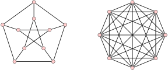

Matemática Discreta
Diego Rodriguez
Universidad Rey Juan Carlos
Matemáticas + Ingeniería Informática
Curso 2023-2024

Matemática Discreta © 2024 by Diego Rodríguez is licensed under Attribution-NonCommercial 4.0 International. To view a copy of this license, visit http://creativecommons.org/licenses/by-nc/4.0/